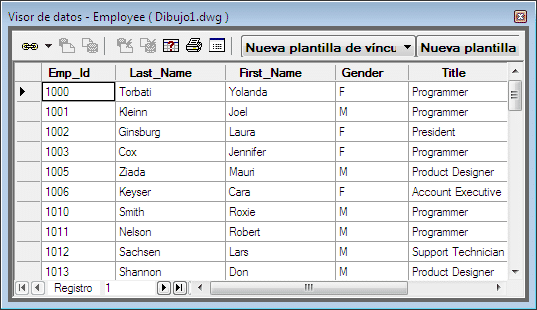

INFORMACION SOBRE EL TEMA
Bienvenido a la sección de información, aquí podrás hacer una retro alimentación del tema propuesto en el juego y además si deseas profundizar mas el tema, puedes aprender con la siguiente información:
¿QUE ES UNA BASE DE DATOS?
Una base de datos en palabras simples es un conjunto de datos almacenados electronicamente en un sistema de computadora, ayudándonos así, a organizar la información y de esta manera utilizarla y encontrarla fácilmente.

Elementos de una Base de Datos
Tablas: Se parece a una hoja de calculo, en relación a que se almacenan filas y columnas, la diferencia entre estos es la manera de almacenar los datos.
 Formularios: Es la entrada de datos, son la interfaz que se utiliza para trabajar los datos, conteniendo diversos botones que ejecutan ciertos comandos para cumplir una tarea.
.jpg)
Informes: Son aquellos que sirven para establecer un formato a las informaciones, resumir y presentar los datos en las tablas.
.jpg)
Consultas: Es la que hace el trabajo en la base de datos una de sus funciones es recuperar datos importantes de las tablas, ademas de otorgar visualización de estas informaciones en una sola hoja de datos.